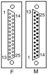
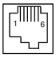
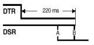
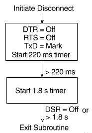

This chapter describes the serial asynchronous communications through the host ports.
9.1 Overview
The VT510 is a single-session terminal. You have a choice of switching between Comm1, an EIA 232 25-pin port; and Comm2, an MMJ port, for host communications.
The 25-pin port uses either a male or a female connector but does not use both at the same time. In Set-Up, you can also designate this port as a printer port.
The VT510 has the following features:
- Baud rate up to 115.2 K
- 1024-byte receive buffer to prevent buffer overflow
- Flow control scheme that independently selects the transmit and the receive side of the communication line
- Expanded flow control options to include hardware DTR/DSR flow control
- A Hold state that causes an XOFF to be sent immediately
- Option to accept or ignore NUL characters
- Support for half-duplex mode
9.2 Introduction to Communications
This chapter describes the physical layer and data link layer. The physical layer is comprised of the mechanical, electrical, and functional arrangements necessary for a physical connection, including cables and telephone lines. The physical layer applies to both ANSI and ASCII terminal emulations.
The data link layer is the electronic protocol used to convey a unit of information from the VT510 to a host computer. This layer includes flow control, character conversions, and some forms of error control.
The asynchronous character format consists of a start bit (space), the data bits (1=mark, 0=space), the parity bit (if present), and one or two stop bits (mark). The data bits represent a character with the least significant bit leading. The parity bit may be enabled as either none, odd, even, space, or mark. Received parity may be checked or ignored. Only odd or even parity when received and must be the same as the parity transmitted. These parameters can be selected through Set-Up or by using the escape sequence, DECSPP.
For further information on the asynchronous character format, refer to ANSI X3.15-1976, American National Standard for bit sequencing of the American National Standard Code for Information Interchange in Serial-By-Bit Data Transmission.
The VT510 supports the following:
- Full-duplex mode
- Half-duplex mode
Full-duplex mode allows simultaneous two-way communication, while half-duplex mode limits communication to one way at any given time. The VT510 always supports full duplex (two wires) at the physical layer. Half-duplex mode is a simple data link layer protocol intended to support half-duplex modems. It is common to view the terminal and attached modem as a single system. Refer to Section 9.3.4 for details on half-duplex mode. This feature can be selected from Set-Up or by the control function, DECHDPXM.
The VT510 does not support synchronous communications.
9.3 Physical Communications Link
Communications lines may be connected to both Comm1 and Comm2 ports without interaction between the two lines. You can use the Communication Port select Set-Up menu to select the physical link to the cables. The port selection can also be programmed through the escape sequence, DECSCP.
When you change from EIA 232-E (25-pin port) to DEC 423 (MMJ port), the VT510 performs a disconnect on the EIA 232-E port. If the change is from DEC 423 to EIA 232-E, then the VT510 performs a disconnect on the EIA 423 port (deasserting DTR).
9.3.1 25-Pin Connectors
Figure 9–1 shows the 25-pin EIA 232 port.
| CCITT/EIA/DIN | |||
 |
1 | OPEN or PROT GND¹ | |
| 2 | TXD | 103/BA/D1 | |
| 3 | RXD | 104/BB/D2 | |
| 4 | RTS | 105/CA/S2 | |
| 5 | CTS | 106/CB/M2 | |
| 6 | DSR | 107/CC/M1 | |
| 7 | SIG GND | 102/AB/E2 | |
| 8 | CD | 109/CF/M5 | |
| 12 | SI | 112/CI | |
| 20 | DTR | 108.2/CD/S1.2 | |
| 23 | SPD SEL | 111/CH/S4 | |
| 9-11, 13-19, 21, 22, 24, 25 NC | |||
The DB-25P serial port accepts a variety of modems that meet national and international standards. Interface signals are labeled with both EIA and CCITT designations.
Table 9–1 shows the EIA interface signals and functions.
| Pin | Signal Name | Source | Function | CCITT/EIA/DIN |
|---|---|---|---|---|
| 1 | N.C.¹ | See ¹ | ||
| 2 | TXD | Terminal | Transmitted Data | 103/BA/D1 |
| 3 | RXD | Modem | Received Data | 104/BB/D2 |
| 4 | RTS | Terminal | Request to Send | 105/CA/S2 |
| 5 | CTS | Modem | Clear to Send | 106/CB/M2 |
| 6 | DSR | Modem | Data Set Ready | 107/CC/M1 |
| 7 | SGND | Signal Ground | 102/AB/E2 | |
| 8 | RLSD | Modem | Rec Line Signal Detector | 109/CF/M5 |
| 9-11, 13-19, 21, 22, 24, 25 | N.C. | |||
| 12 | SPDI | Modem | Speed Mode Indication | 112/CI/M4 |
| 20 | DTR | Terminal | Data Term. Ready | 108.2/CD/S1.2 |
| 23 | SPDS | Terminal | Speed Select | 111/CH/S4 |
¹ Pin 1 of the 25-pin connector normally will be open; however, the VT510 shall provide provisions for a 100-ohm resistor ground to be added to the VT510's printed circuit board. This may become necessary for products sold in Germany. |
||||
9.3.2 DEC Corporate Modular Jacks (MMJ)
The modular jacks provide DEC-423 compatible levels with the intent of allowing greater length between terminal and host. Limited modem support is also provided. The DTR output and DSR input are supported on this connector. Transmit ground for transmit data and DTR are isolated from receive ground used for receive data and DSR. Figure 9–2 shows the MMJ port signals.
 |
1 DTR |
| 2 TXD + | |
| 3 TXD - | |
| 4 RXD - | |
| 5 RXD + | |
| 6 DSR |
Table 9–2 describes the function of each MMJ interface signal.
| Pin | Signal Name | Source | Function |
|---|---|---|---|
| 1 | DTR | Terminal | Data Terminal Ready* |
| 2 | TXD+ | Terminal | Transmitted Data |
| 3 | TXD- | Terminal | Transmit Signal Ground |
| 4 | RXD- | Modem | Receive Signal Ground |
| 5 | RXD+ | Modem | Received Data |
| 6 | DSR | Modem | Data Set Ready† |
*Pin 1 is a terminal output signal and uses pin 3 as a reference. †Pin 6 is a terminal input signal and uses pin 4 as a reference. |
|||
9.3.3 Connector Pins Description
This section describes the function of full-duplex mode connector pins. Half-duplex mode connector pins have different functions than the full-duplex mode connector pins as mentioned in Section 9.3.4.
9.3.3.1 Transmitted Data–TXD
The TXD signal is supported on the 25-pin D-sub and the Corporate Modular Connector.
Data on this circuit represents the serially encoded characters that are transmitted from the VT510. This circuit is held at the mark state (-) during stop bits between characters and also at times when no data is being transmitted.
On the 25-pin connector when modem control is enabled, no data is transmitted unless Clear to Send is asserted from the modem. Assertion of DSR or RLSD from the modem is not required. This is specific to the 25-pin EIA connector and is intended to allow the VT510 to communicate with intelligent modems (like the DF224) before a connection has been established.
9.3.3.2 Received Data–RXD
The RXD signal is supported on the 25-pin D-sub as well as on the Corporate Modular Connector.
Data on this circuit represents the serially encoded characters to be received by the VT510.
When modem control is not enabled, received data is processed regardless of the state of the control lines.
On a 25-pin EIA connector, when modem control is enabled and a connection has been established (DSR from the modem is asserted), the received characters are ignored if RLSD is unasserted, except when Disconnect Delay in Set-up is selected as No disconnect. This is an implementation in firmware of mark carrier clamping.
If a connection has not been established (DSR from the modem is not asserted), then received characters are processed even if RLSD is unasserted. This is an implementation that permits V.25 bis compatible autodial modems to be used without the user having to set "data leads only" to access the autodial functions.
9.3.3.3 Request to Send–RTS
The RTS signal is supported on the 25-pin D-sub but not on the Corporate Modular Connector.
For modems with this function, asserting RTS may put the modem in the transmit mode. When the modem is in the transmit mode, it then asserts CTS.
For full-duplex modems without RTS inputs, CTS is asserted by the modem whenever it is capable of transmission.
9.3.3.4 Clear to Send–CTS
The CTS signal is supported on the 25-pin D-sub but not on the Corporate Modular Connector.
Assertion of CTS indicates that the modem is ready to receive data (that is, the terminal is clear to send data to the modem).
The data can be either a command to the modem if "off line" (DSR de-asserted) or transmitted data to the host if "on line" (DSR asserted).
9.3.3.5 Data Terminal Ready–DTR
The DTR signal is supported on the 25-pin D-sub as well as the Corporate Modular Connector.
The VT510 asserts DTR whenever it is ready to transmit and/or receive on the port to which it is associated with.
The VT510 de-asserts DTR when:
- Recalling saved settings
- Recalling factory defaults
- Pressing Shift/Break
- Powering up self-test
- Resetting to Initial State (RIS)–hard reset
- DTR is being used for hardware flow control and the receive buffer has reached the flow control threshold
The VT510 does not de-assert DTR when:
- Resetting session
- Clearing comm
9.3.3.6 Data Set Ready–DSR
The DSR signal is supported on the 25-pin D-sub as well as the Corporate Modular Connector.
When the DTR/DSR is not the selected flow control scheme, the assertion of DSR indicates the following:
- That the modem is in the data mode
- That the modem is connected to the communications channel
- The answer tone is finished
- The user is being charged by the PTT
- That the modem is ready to exchange the appropriate control signals to initiate data transmission/reception
When DTR/DSR is the selected hardware flow control scheme only, refer to Section 9.4.2.2.3.
9.3.3.6.1 Modem Initiated Disconnect
When DSR is unasserted during the progress of a call but before DTR is unasserted, the terminal interprets this condition as a lost or aborted call and disconnects. Any subsequent assertion of DSR is considered a new call. If connected to a modem and the modem's power is turned off or if DSR becomes an open circuit, then the VT510 interprets these conditions as a de-assertion. The state of the DSR input is shown on the indicator status line display.
9.3.3.6.2 Terminal Initiated Disconnect
The terminal disconnects itself from the modem by dropping DTR.
 |
Terminal Initiated Disconnect |
If DSR is de-asserted 220 ms after DTR goes de-asserted, then do nothing, since the modem has already done a disconnect. If DSR is still asserted 220 ms after DTR goes deasserted, then DTR must remain deasserted for greater than 2 seconds to assure that the modem does a disconnect.
9.3.3.6.3 Modem off line
When DSR is unasserted and modem control is enabled on the 25-pin EIA connector, the system is in a transitory "off line" state. In this state, the user may interact with a dial-up modem to enter numbers, change modem set-up, and so on.
When DSR is asserted and modem control is being used, the modem, terminal, and host system are ready for communication to a remote host.
9.3.3.7 Receive Line Signal Detector–RLSD
This signal is supported on the 25-pin D-sub but not on the Corporate Modular Connector.
RLSD is also called Carrier Detect. The modem asserts RLSD when the received signal is of sufficient amplitude or in the case of "training modems," when both modems have adjusted and equalized to the prevailing line conditions, to ensure demodulation of Received Data. The unasserted condition of RLSD indicates that there is neither a received signal nor that it is unsuitable for demodulation.
9.3.3.8 Speed Indicator–SPDI
The SPDI signal is supported on the 25-pin D-sub but not on the Corporate Modular Connector.
This signal comes from the modem. When Modem Control is enabled in Set-Up, the transmit and receive speed is set as follows:
| State | Transmit and Receive Speed |
|---|---|
| Unasserted | Modem Low Speed |
| Asserted | Modem High Speed (default) |
The user should set these Set-Up fields so that the fast speed (2400 baud, for example) is exactly twice the slow (1200 baud, in the following example) if V.25 bis compatibility is desired. Otherwise, the user may set the two speeds as applicable (1200/300 baud, in the following example).
| Assert | De-assert | |
|---|---|---|
| Bell 212 | 1200 | 300 |
| Bell 103 | 300 | n/a |
| V.22 | 1200 | 600 |
| V.22 bis | 2400 | 1200 |
| V.26 ter | 2400 | 1200 |
| V.32 | 4800 | 2400 |
| V.32 | 9600 | 4800 |
9.3.3.9 Speed Select–SPDS
The SPDS signal is supported on the 25-pin D-sub but not on the Corporate Modular Connector.
If the speed is greater or equal to 1200 baud, then Speed Select will be high. If the speed is below 1200 baud, then Speed Select will be slow. This signal comes from the terminal.
9.3.4 Half-Duplex Mode
Half-duplex mode works on the EIA 232 line only. It uses the pin signals to control the data traffic to one direction at any given time.
In this mode, Data Terminal Ready (DTR) is always asserted. The terminal checks the assertion of Data Set Ready (DSR) constantly. The terminal disconnects once DSR is dropped. Ready to Send (RTS) is asserted only if the terminal intends to transmit.
Before transmitting, the terminal checks for the presence of Carrier Detect (CD). If CD is still detected for five seconds, then the terminal disconnects. Otherwise, the terminal asserts the Request to Send (RTS) signal and starts detecting the Clear to Send (CTS) signal. Transmission starts if CTS is detected within five seconds. If CTS is not monitored within five seconds, then the terminal disconnects. After transmission, RTS is de-asserted from the terminal. If CTS is still detected within the next five seconds, then the terminal disconnects.
9.3.5 Supported Modem Configurations
This section describes the supported modem configurations.
9.3.5.1 CCITT Public Switched Telephone Network (2-wire only)
V.21 Modem (V.24/V.28)
Async, FDX, up to 200/300 bit/s
V.22 Modem (V.24/V.28)
Async, FDX, up to 1200 bit/s
V.22 bis Modem (V.24/V.28)
Async, FDX, up to 2400 bit/s
V.23 Modem (V.24/V.28)
Async, Asymmetric FDX
Receive = 600 or 1200 bit/s,
Transmit = Reverse channel at 75 bit/s
V.25 bis Auto Dial Protocol Modem and Hayes
9.3.5.2 CCITT Dedicated Line (2-Wire / 4-Wire) Data Network
V.21 Modem (V.24/V.28, 2-W)
Async, FDX, 200/300 B
V.23 Modem (V.24/V.28)
FDX, Async, 1200 B, 4-W
V.25 bis compatible Modem
Async, FDX, any standard speed from 300 baud up.
X.20 bis Full-Duplex asynchronous 300 baud data service unit
9.3.5.3 European Public Circuit Switched Data Network
D1200S (Germany)
VC-DCE (Nordic Network)
VPC-DCE (Nordic Network)
X.20bis (V.21) Data Service Unit (V.28)
Async, FDX, up to 300 B
9.3.5.4 European Public Packet Switched Data Network (PSDN)
Germany: DATEX-P
Basic Datex P10-Service (X.25): Not supported
Additional Datex-P20 Service:
Fixed Connections to PAD facility with X.28 procedure:
| Service | DCE |
|---|---|
| DATEX-P20 H300 |
DFG300(X.20 bis), D300S (V.21) |
| DATEX-P20 H1200 |
D1200S12(V.22), D1200S (V.23,4-W) |
| DATEX-P20 H1200/75 |
D1200S (V.23 with sec. channel, 75 baud Transmit / 1200 Baud Receive) |
| DATEX-P20 H2400 |
Access to DATEX-P PAD facility from other public switched networks with X.28 procedure:
| Service | Access | DCE |
|---|---|---|
| DATEX-P20 L300 |
DATEX-L | DFG300 (X.20bis) |
| DATEX-P20 F300 |
PSTN | D300S (V.21) |
| DATEX-P20 F1200 |
PSTN | D1200S12 (V.22) |
| DATEX-P20 F1200/75 |
PSTN | D1200S (V.23 with sec channel, 75 baud Transmit, 1200 baud Receive) |
| DATEX-P20 F2400 |
9.4 Data Link Layer
This section describes the data link layer.
9.4.1 7-Bit VT100 or 8-Bit VT510 Operation
The VT510 supports three broad classes of application requirements:
- Strict compatibility for existing VT100 applications:
- No 8-bit control codes
- No 8-bit data. Function keys are not limited to the VT100 set as in previous terminals.
- A migration path that allows most applications to run without modification:
- No 8-bit control codes
- 8-bit graphic data allowable
- VT400 function keys are allowable (but not immediately useful) and can be integrated into the application over time.
- Full VT510 mode (VT level 4) functionality:
- 8-bit data allowable
- 8-bit controls allowable
- All VT500 function and modifier keys
The VT510 application requirements are possible through the following VT terminal modes:
- VT52 Mode (7-bit characters, 7-bit controls)
- VT100 Mode (7-bit characters, 7-bit controls)
- VT400 Mode, 8-bit characters, 7-bit controls
- VT400 Mode, 8-bit characters, 8-bit controls
- VT400 Mode, 7-bit characters (Keyboard restricted to keys that generate 7-bit codes, 7-bit graphics, 7-bit controls, for NRC sets, worldwide version only).
These modes are the only supported modes. 8-bit characters are temporarily disabled when in VT100 mode.
The following are certain limitations within these modes:
- The terminal accepts both C0 and C1 controls when 8-bit characters are selected (7-bit NRCS Characters is not selected).
- The terminal accepts both GL and GR characters when 8-bit Characters are selected.
- When 7-bit characters are selected, the terminal sets the high bit of all received characters to zero. This action results in compatible character handling. The received characters, therefore, have only seven significant bits. This is applicable to both graphics characters and control characters.
- If the user needs to restrict the controls to 7 bits, but still needs 8-bit graphic characters and new function keys, then the user can select Transmit 7-bit controls with an 8-bit host line. To get full efficiency out of new applications, select 8-bit controls and an 8-bit host line. The 7-bit NRCS Characters selection is compatible with 7-bit NRC-based applications.
- C1 controls are never available directly from the default keyboard, although they may be available indirectly through the function keys or numeric compose.
- When the terminal is in printer controller mode and the 7-bit character mode, upon receiving 8-bit graphic characters, the terminal immediately retransmits them through the printer port to the printer. The highest bit is not stripped off.
- In printer controller mode when the terminal is receiving 8-bit characters and immediately retransmitting them on a 7-bit line, the high bit is stripped off.
- When the screen contains 8-bit (GR) characters and is being printed on a 7-bit printer, the characters are subject to constraints, which are described in Chapter 10.
- Keyboard operation guidelines are described in Chapter 8.
9.4.2 Flow Control
Flow control is a means to alternately suspend and resume the flow of characters over serial asynchronous point-to-point communication lines.
Depending on the type of flow control selected, the stop/resume transmission signal is different. Users can select a software flow control scheme, a hardware flow control scheme, or a combination software and hardware flow control scheme to meet their communication environment.
9.4.2.1 Receive Buffer
The VT510 operates at a transmission speed of up to 115.2K baud. To prevent loss of data, the receive buffer is 1024 byte. The substitute (SUB) character is substituted in the input buffer for any character with detected receive parity errors or framing errors. If the input buffer overflows, a SUB character is placed in the buffer in place of the lost characters. The SUB character is displayed as a reverse question mark.
9.4.2.2 Flow Control Selection
The VT510 supports bidirectional flow control. The flow control scheme can be selected independently for the transmit and receive direction. The user has the following choices for transmit data flow control:
- No Flow Control
- XON/XOFF
- DTR
- Both
The user has the following choices for receive flow control:
- No Flow Control
- XON/XOFF in VT mode or XPC in PC term mode
- DSR
- Both
You can select flow control methods from Set-Up or through the escape sequences, DECSFC.
9.4.2.2.1 No Flow Control
If No Flow Control is selected, then when the receive buffer is full, it does not send any signal; therefore, the Hold key is disabled. The Ctrl/S key stops the flow and the Ctrl/Q resumes the flow. It is left to the application and user to prevent buffer overflow.
Software that does not support flow control may use all the features of the VT510 by treating NUL as a fill character. If Ignore NUL is selected in Set-Up, then NUL is discarded upon receipt. All other received characters are stored in the input buffer for further processing. Ignore NUL or Accept NUL can be selected from Set-Up or through the escape sequence, DECNULM.
The VT510 can be used without flow control or fill characters, when the:
- Software never sends ESC sequences to the terminal
- Baud rate is limited to 19200 baud or less
- Software does not use smooth scrolling
9.4.2.2.2 XOFF/XON or XPC Flow Control
In the XOFF/XON flow control, two characters establish flow control. In VT mode, these two characters are DC1(11H) (XON) and DC3(13H) (XOFF). In VT mode, the VT510 sends XOFF to suspend the transmission of data and XON to resume the reception. Receipt of XOFF inhibits the VT510 from transmitting any code except XOFF and XON. If the keyboard data buffer overflows, then the keyboard locks and "wait" is displayed in the keyboard indicator line. Transmission resumes upon receipt of XON.
In PC Term mode, the terminal receives from the host 11H(DC1) and 13H(DC3) for flow control; but the terminal sends 65H and 67H to the host to resume/stop the communication, known as XPC flow control.
VT510 sends XOFF to indicate halt of transmission when:
- The number of characters in the input buffer reaches the first XOFF point since the last XON was sent.
- The number of characters in the input buffer reaches the second XOFF point since the last XON was sent.
- The input buffer is full.
- Entering a hold state.
Entering a Hold state causes an XOFF to be sent by the VT510. A Hold state can be generated by pressing the Hold key or entering Ctrl/S. When exiting from the hold state either by depressing the Hold key or entering Ctrl/Q, the terminal sends XON to the host unless the input buffer is filled up to or beyond the first XOFF point (flow control threshold).
With the exception of exiting from the hold state, the VT510 sends an XON when the input buffer is emptied to the XON point and when XOFF was the last flow control sent.
Refer to the Section 9.4.2.2.5 for more information on the thresholds.
The VT510 re-initializes the XON/XOFF(XPC) state under the following conditions:
- The Clear Comm function is performed.
- The completion of the NVR recall after the RECALL function is performed.
- The completion of all tests in a self-test sequence is performed.
- Successful completion of a connection - generally, DSR assertion.
- The reception of RIS.
9.4.2.2.3 DSR/DTR Flow Control
When Hardware flow control is selected, DTR is asserted any time the terminal is not in self-test and the terminal's input buffer is below the flow control threshold; DTR is de-asserted when the input buffer is filled up to or beyond the threshold.
If the terminal is a sending device, then it polls DSR before transmitting each character. If DSR is not being asserted by the receiving device, then transmission of the character is suspended until DSR is asserted.
As in the XON/XOFF software flow control, VT510 deasserts DTR when:
- The number of characters in the input buffer is greater than or equal to the flow control threshold (first XOFF point).
- Entering the Hold state.
As in the XON/XOFF flow control, entering a Hold state causes a deassertion of DTR. When exiting from the hold state either by depressing the Hold key or by entering Ctrl/Q, the terminal asserts DTR unless the input buffer is filled up to or beyond the flow control threshold (first XOFF point).
With the exception of exiting from the hold state, the VT510 reasserts DTR when the input buffer is emptied to the "resume transmission" (XON) point.
DSR/DTR can be used for hardware flow control when they are not needed for modem control functions. When Modem Control is enabled, DSR/DTR should not be selectable.
9.4.2.2.4 Software and Hardware Combined Flow Control
For software and hardware flow control, both DTR/DSR and XON/XOFF(XPC) are used to control the data flow. When the receive input buffer reaches the flow control threshold, XOFF is sent and DTR is deasserted. When transmitting, the terminal must be in the XON state with DSR asserted to transmit the next character, except in the case of (XON/XOFF).
9.4.2.2.5 Flow Control Threshold
Table 9–3 shows the flow control threshold points available for the VT510.
| 1st Flow Control Threshold | Resume Transmission Point | 2nd Flow Control Threshold |
|---|---|---|
| 64 | 32 | 896 |
| 768 | 128 | 896 |
9.4.2.3 Show Control Character Mode
While in show control character mode, all characters are temporarily stored in the input buffer and eventually displayed on the screen in the CRM font. XON and XOFF can serve both as data (to be displayed) and flow control. Note that this circumstance is unique to show control character mode.
9.4.2.4 Set-Up on Flow Control Handling
Entering Set-Up leaves the received character processing in the state it was in before entering Set-Up. Characters continue to fill the silo, depending on the flow control type selected. A signal (XOFF or lower DTR) will be sent when the silo gets to the first flow control threshold.
9.4.2.5 When Disconnect Occurs
If a disconnect occurs while the VT510's silo contains characters that have not been displayed or printed, then the characters may be discarded in order to prepare for the next call. XON is sent when a new connection is established.
9.5 Features that Affect Communications
The following features described in Chapter 2 affect communication:
- Clear communications
- On-Line/Local
- Transmit speed
- Receive speed
- Transmit rate limiting
- Word size
- Parity
- Stop bits
- Modem control
- Modem high speed
- Modem low speed
- Disconnect delay
- Local echo
9.5.1 Clear Communications
If the terminal appears to be "locked" in Set-Up, then select Clear communications to clear the current session. This action:
- Aborts any print operation in progress if the printer is allocated to the active session.
- Aborts any escape sequence, control sequence, or device control string (DCS) processing.
- Clears the keyboard buffer.
- Clears the receive buffer.
- Clears the transmit buffer.
- Takes the terminal out of printer controller mode.
- Sends XON to the host port if software flow control is in use. Asserts DTR if hardware flow control is in use.
- Resets XOFF received flags on the printer and host ports if software flow control is in use.
The communications had been cleared when "Done" appears on the terminal status line.
Clear communications does not cause a disconnect and does not clear the screen.
9.5.2 Connection
If XON/XOFF flow control is enabled, then a single XON will be transmitted after the connection is made. When a connection is made, the VT510 performs the following operations to ensure that it is ready to send and receive:
- Unlock the keyboard, if it is locked.
- Clear any transmit in progress on this port.
- Clear all buffers associated with this port.
- Clear the "XOFF sent" and "XOFF received" state of this port.
- At the reception of the carrier tone, the modem asserts CD, and data transmission/reception may begin.
9.5.3 Line Disconnection
A disconnect sequence occurs on the following conditions:
- Operator initiates a disconnect by pressing Shift/Break (note that the BREAK can be disabled through Keyboard Set-Up).
- Doing a RECALL, or DEFAULT.
- Loss of DSR.
- Switching to the EIA 232-E port from the DEC423 port or to the DEC423 port from the EIA232-E port.
- With the 25-pin connector and modem control enabled, after a connection has been established, loss of RLSD for greater than 2 seconds (or 60 ms) on host line 1.
- Receipt of a DECTST or RIS sequence (Except the keyboard test in DECTST that leaves the terminal on line).
- Turning off the terminal.
 |
Normally DTR and RTS are asserted by the VT510 whenever power is applied except:
- During a disconnect sequence
- When hardware flow control DTR/DSR is being used and the receive buffer reaches 64 bytes threshold
9.5.4 Break
The Break key operates as described in Chapter 8.
A break consists of a 275 ± 25 ms space condition on the transmit data line if transmission is enabled. The break (space) condition is separated from any subsequent mark-to-space transition by at least 100 ms.
9.5.4.1 Received Break
If a break is detected on the received data circuit, then it is ignored. One or more error characters (reverse question mark) may be displayed because the framing errors were generated.